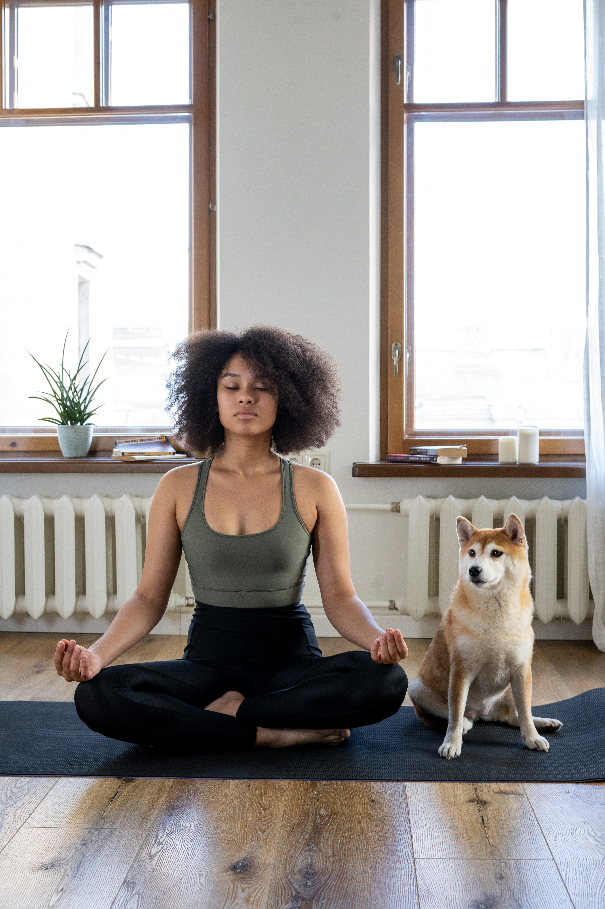
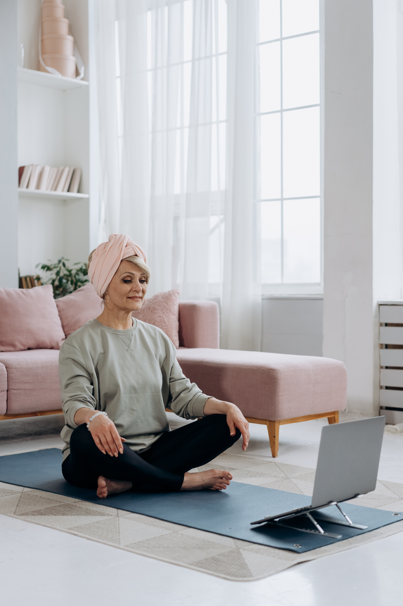
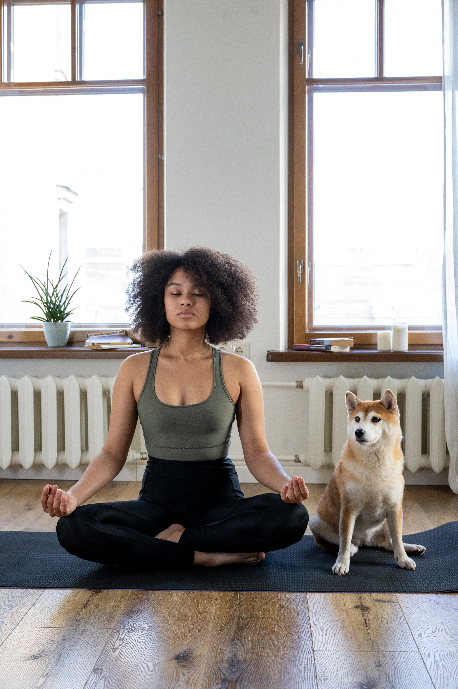
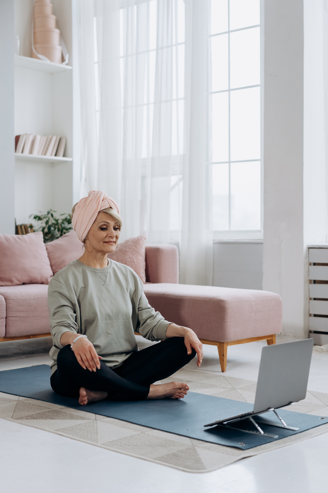

What you need to get started
All you need to start your pilates journey, is an exercise/pilates/yoga mat. Whether you want to follow online videos from the comfort of your home or go to a class with a group of friends, you will start with the pilates fundamental of engaging your core. To do this you can lie on your back, breathe in through your nose and out through your mouth, feel your body moving up and down and pay attention to the movement.
The video above is a great example of a pilates routine you can do for flow, stretching and increasing flexibility. In pilates, there tends to be ways to simplify or intesify each move dependent on your level, strength & flexibility. The flow looks easy, but I guarantee you'll be able to feel the burn once you get going - and that's how you know it's working. It's also a great time to reflect, and relax into the breathing in the cool down at the end!
 


